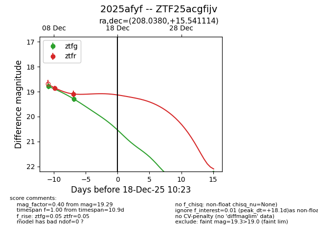
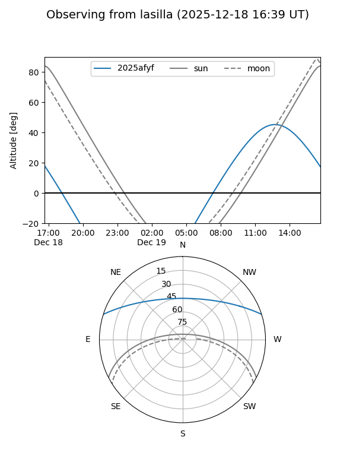
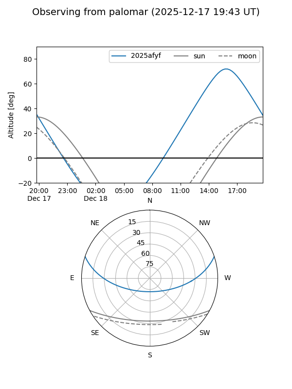

2025afyf
Target 2025afyf at 2025-12-18 11:17
Aliases and brokers:
FINK: fink-portal.org/ZTF25acgfijv
Lasair: lasair-ztf.lsst.ac.uk/objects/ZTF25acgfijv
ALeRCE: alerce.online/object/ZTF25acgfijv
TNS: wis-tns.org/object/2025afyf
YSE: ziggy.ucolick.org/yse/transient_detail/2025afyf
alt names
ZTF25acgfijv (ztf,fink_ztf)
2025afyf (tns,yse)
Coordinates:
equatorial (ra, dec) = 208.0380,+15.54111
equatorial (HMS+DMS) = 13:52:09.13,+15:32:28.01
galactic (l, b) = (356.5977,+71.75159)
Photometry
last ztfg=19.29, ztfr=19.09
2 ztfg, 2 ztfr detections
Lightcurve

Visibility


Additional plots